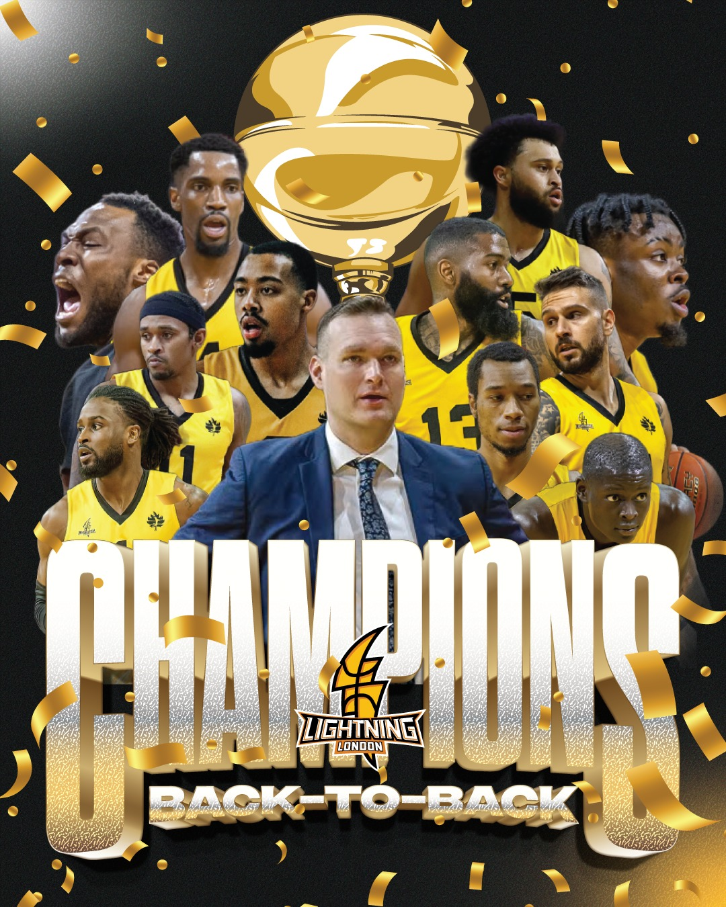
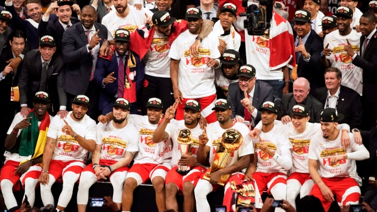

Basketball - Southern Ontario SportsBasketball is one of the most popular sports in North America. It was invented by a Canadian physical education teacher in 1891. Basketball was conceived as a safe sport compared to the more physical sports like football. Basketball is also one of the cheaper sports to play as players don't need the expensive equipment that is required for many other sports. London LightningThe NBLC (National Basketball League of Canada) is a small league with just 4 teams, all of which are in Ontario and 3 of which are in Southern Ontario. The local team, London Lightning, is based here in London and plays at the Budweiser Gardens - the same arena in which the Knights hockey team plays. The Lightning have won the NBLC championship both in 2022 and 2023 and now have 6 championships in total! Toronto RaptorsThe Toronto Raptors are the only Canadian basketball team in the NBA (National Basketball Association), playing in Scotiabank Arena - the same arena in which the Maple Leafs hockey team plays. Also similar to the Leafs, the Raptors struggled in the playoffs even in years when they did very well during the regular season. They were eliminated in the first or second round on several occasions in recent years. However, in 2019, things were different for the Raptors. They progressed through the different series all the way to the final round, which was against the extremely talented Golden State Warriors. Although they were up against a challenging team with experience winning such championships, the Raptors managed to win that series to achieve their first-ever championship. Kyle Lowry and Kawhi Leonard were arguably the two most important players on the team that year that led them to the championship. Unfortunately, Leonard left the team soon after, and they have gone into rebuilding mode. Did You Know?The basketball game was originally played with a soccer ball. Did You Know?The NBA was founded in New York City on June 6, 1946, as the Basketball Association of America (BAA). Did You Know?Michael Jordan, widely regarded as one of the greatest basketball players of all time, scored an average of 30.1 points per game during his NBA career. |
||||